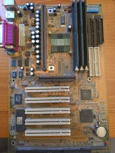

1999’da popüler olmuş, Intel 440BX yonga setiyle gelen retro anakart. Slot 1 işlemci desteği ve klasik IDE bağlantılarıyla nostaljik bir parça.
| Özellik | Değer |
|---|---|
| Soket | Slot 1 |
| Chipset | Intel 440BX |
| RAM | 3x SDRAM Slot |
| PCI/AGP | 5x PCI + 1x AGP |
| Depolama | IDE |